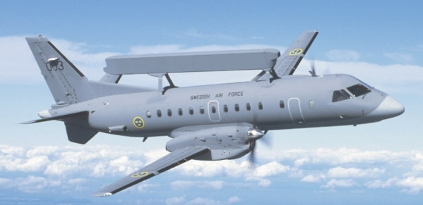
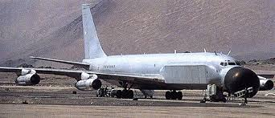
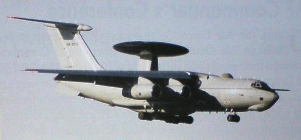
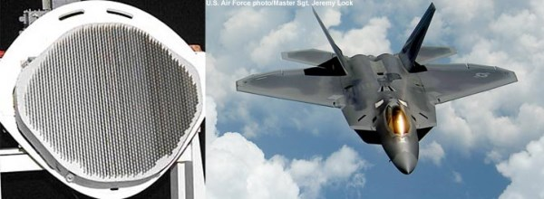

【空军】【海军】雷达与隐身技术之间的矛盾关系（下）
2014-08-21 18:43:00
原文网址：https://blog.udn.com/MengyuanWang/108908628
最新的雷达天线技术是AESA。英文的“Active”一般翻译为“主动”，它的真正涵义是指阵列的每个单元都有自己的驱动逻辑，可以独立工作。而“Passive”（“被动”）当然就是指很多单元共用一个驱动逻辑。这个技术性的辞汇定义和15年前用在LCD（Liquid Crystal Display，液晶显示）萤幕的所谓Active Matrix（主动矩阵）和Passive Matrix（被动矩阵）是一様的。用在雷达天线阵列上，主动阵的每个单元有它自己的T/R Module（发射/接收组件），而被动阵必须共用一个微波產生器。
AESA相对于PESA的优点在三个方面：首先，AESA的电磁波通路比缝隙阵列还要短，虽然T/R Module的效率稍低于PESA和缝隙阵列用的TWT（Traveling Wave Tube，行波管） ，但是整体来说，AESA的效率还是最高的。其次，现代的T/R Module用的是固态（Solid State）的砷化镓（GaAs）晶片，可靠性要远高于TWT。但是最重要的差别还是在于AESA可以数位化，以软体程式来控制波束，所以有许多以前想都想不到的新功能，例如它可以同时发射好几个波束，这些波束甚至可以用不同的频率等等。又如雷达干扰器的工作方式之一是在接受到敌方雷达波后，立刻送回一个和反射波相似但是频率稍变的波束，用以困惑对方的相位多普勒电路，这个功能可以整合进AESA雷达里面。
最早实用化的AESA是瑞典Ericsson在1985年开始研发的Erieye空用预警雷达（AEW&C，Airborne Early Warning & Control）。 Ericsson是世界微波通讯的领头企业，完全有能力独力发展全新一代的微波探测技术。而当时美国的军用雷达制造商已经花了20年的心血和资金在老技术上，把缝隙阵列的技术潜力发挥得淋漓尽致，第一世代的AESA看来就并不是特别有吸引力。 1993年Erieye服役之后证实了AESA雷达的革命性优势，AESA成为所有新雷达的标凖，除了破產的俄国和欢欣享受和平红利的英法没有积极发展AESA之外，世界上主要的军工国家都全力投入，也就是以色列，美国和中共。
瑞典空军的Erieye预警机，载机是Saab 340。
苏联解体之时，军工企业忽然断炊，连薪水都发不出来，絶大多数犹太裔的专家因而移民以色列，以色列一夕之间跻身一流军工国家之列，在雷达方面他们的杰作就是Phalcon（Phased Array L-band Conformal Radar）空用预警雷达。 Phalcon採用L Band，比用S Band的Erieye抗隐身能力更胜一筹，是1990年代世界最佳的空用预警雷达，比美军的E3用的PESA先进了一代。
第一代的Phalcon预警机，型号EL/M-2075，载机是波音707。第二代的Phalcon预警机，型号EL/W-2090，载机是俄制的IL-76；原本为中共开发，后来转售给印度；转盘里是背对背的双面阵列，依赖机械旋转来完成360 °扫瞄。
中共在1994年签约引进Phalcon，但美国强迫以色列于2000年撕毁合约，拆下已装好的雷达，于是中共加速投资自主开发的L-Band AESA。 2005年，首艘052C驱逐舰服役，舰上装有四面H/LJG346阵列，是世界第一部大型舰用AESA雷达。 2013年，052D驱逐舰服役，装有更先进的H/LJG346A雷达，改用更大功率的T/R module和内建液冷系统，因而外表不再是为气冷而设计的曲面。在空军方面，空警2000预警机于2007年加入中共空军序列，性能超过了Phalcon。随后又发展了小号的空警200。去年，第二代的空警500开始露面。如今共军预警机的开发瓶颈不在雷达，而在载机，这必须等到C919客机在2016年服役之后才能完全解决。
共军的空警2000，载机也是俄制的IL-76，原本装了Phalcon，后来以色列拆下雷达将空机交给中共；雷达盘为固定式，内含三个阵列，由纯电子扫瞄便可完成360°监视。
美国在苏联解体之后，也享受和平红利，并没有急着换装已有的缝隙阵列和PESA雷达；只有为全新的F22开发X-Band AESA，这就是AN/APG-77，2006年服役，它是世界第一部实用的战斗机用AESA（之前日本F-2装备的J/APG-1性能并不比同时代的缝隙阵列雷达有明显的优势），至今仍是所有其他战机雷达的标竿。到2010年后，升级F15，F16和F18用的AESA雷达先后完成，不过美国目前财务困难，全面换装遥遥无期。
AN/APG-77和F-22；这个AESA有1956个单元，至今仍无其他战机雷达能出其右。
AN/APG-77和后续为F35而衍生的AN/APG-81虽然技术先进，功能强大，其反隐身的能力仍然受X-Band波长的限制，远不及共军装在预警机和区域防空舰的L -Band和S-Band AESA。这当然不是巧合。美国独霸隐身技术有30年之久，他自己没有迫切的反隐身需求，而中俄则相反。尤其是中共，其军用电子技术经过20多年的精心培育，已经发展到几乎赶上美国的地步，不但在大型低频AESA领先美国，连X-Band雷达也只有5-10年之遥，例如前年定型的J-10B配有中共第一代X-Band AESA（有人说J-10B原本装了PESA，生產很小的数目后AESA就出来了，从此改用新雷达；不论这传言真假，2014年下线的J-10用的确是AESA），相当于美国正在兜售给国军F-16A/B升级用的SABR（Scalable Agile Beam Radar）；而J-16所配备的中共第二代X-Band AESA则基本等同美国海军为F-18E/F升级所开发的AN/APG-79。
Northrop的Sabr是三种F-16可用的AESA之一，原定给国军和美军升级F-16用的，但美军自己的升级计划因缺乏经费而取消；南韩订购的RACR（Raytheon Advanced Combat Radar）则还在进行中，或许国军可以改向Raytheon购买；Northrop的AN/APG-80用电太多，只能装在全新的F-16 Block61上。

F-117的雷达截面积（纵轴）对雷达波频率（横轴）的关系。只有在5-15GHz（即C，X和Ku-Band）才完全隐身，对L-Band其截面积高达0.6平方公尺，空警2000可以在250公里外轻松截获其反射讯号。F-117的飞行性能基本上像一只装了印擎的猪，执行任务全靠隐身，一旦遇到L-Band预警机就只有等被烧烤的份。难怪空警2000一出现，美军就急忙在2008年把F-117提前淘汰，还嘴硬说是为F-35让道；其实F-35计划毛病丛生，到现在还不能真正量產。
希望有耐心读完全文的读者到此了解为什么F22和F35对共军已经没有压倒性的优势。美军因此必须依赖B2和B3这些隐身轰炸机。它们因为採用了飞翼形设计，外形折线尺寸在十公尺以上（如B2翼展每边26.2公尺，其前缘就是一条直线），对L-Band仍然具有极为有效的隐身能力。当然共军也在开发HF频道的大波长雷达阵列，由于电离层的反射，HF电磁波甚至可以越过地平綫前进，因此又叫“天波雷达”，其波长则刚好对隐身轰炸机有最佳的探测效果。像这様的道高一尺魔高一丈的攻防技术竞赛是军事歷史上的常态，在可见的未来，仍将继续下去。
中共海军在东海海岸线上建立的HF天波雷达阵列。